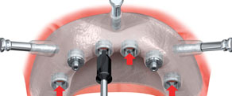

NobelGuide is a ground-breaking surgical solution with primary drive to provide you with beautiful, healthy teeth, within a day or two, and with fewer appointments and a less invasive procedure. This means getting back to your social and working life quickly with less disruption. The expert dental faculty from hospitals in India have welcomed this novel way of treating orthodontic matters.
NobelGuide benefits:
Maximun comfort
- Most surgery is carried out with a flapless surgical technique reduce pain and swelling post-operation.
Immediate cost saving
- Fewer treatment appointments, reduced time off from working life.
Fast Treatment
- Using the NobelGuide treatment protocol, a pre-made, temporary or final, prosthetic solution can be prefabricated ready to install at the time of surgery, thereby radically shortening treatment time.
The process involves CT planning using 3-D computer based reconstruction of your jaws. These computer reconstructions enable us to predetermine the positions of implant(s) and also the immediate teeth or bridge. The CT data is also used to fabricate a 3-D surgical guide which is a very precise guide as to the position of the dental implants and subsequent connection to the prosthetic teeth.
NobelGuide deals primarily deals with the cases involving implant treatment for a full arch (I.e. no remaining teeth) or for multiple dental implants 3-5 missing teeth within a dental arch. The treatment planning software allows creation of a 3-D image of your jaw bone and teeth. It also provides a detailed view of all anatomical structures and allows accurate surgical planning of dental implant positions prior to surgery.